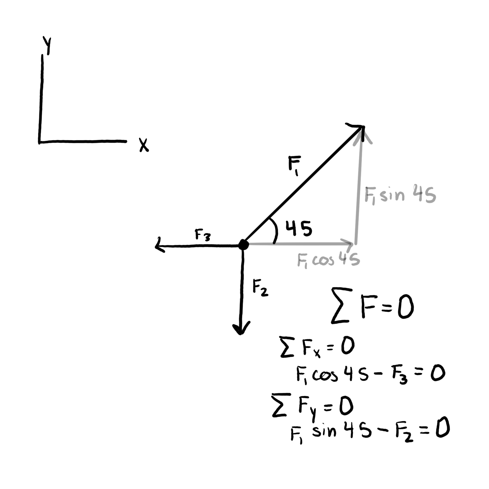

Forces and relationships between them are how many statics problems are solved
A free body diagram is a great way to show all of the forces acting on an object. All free body diagrams should show the body which is being impacted by forces, all forces with their direction angles and magnitudes labeled, and a coordinate axis to define what direction the forces are acting in.
